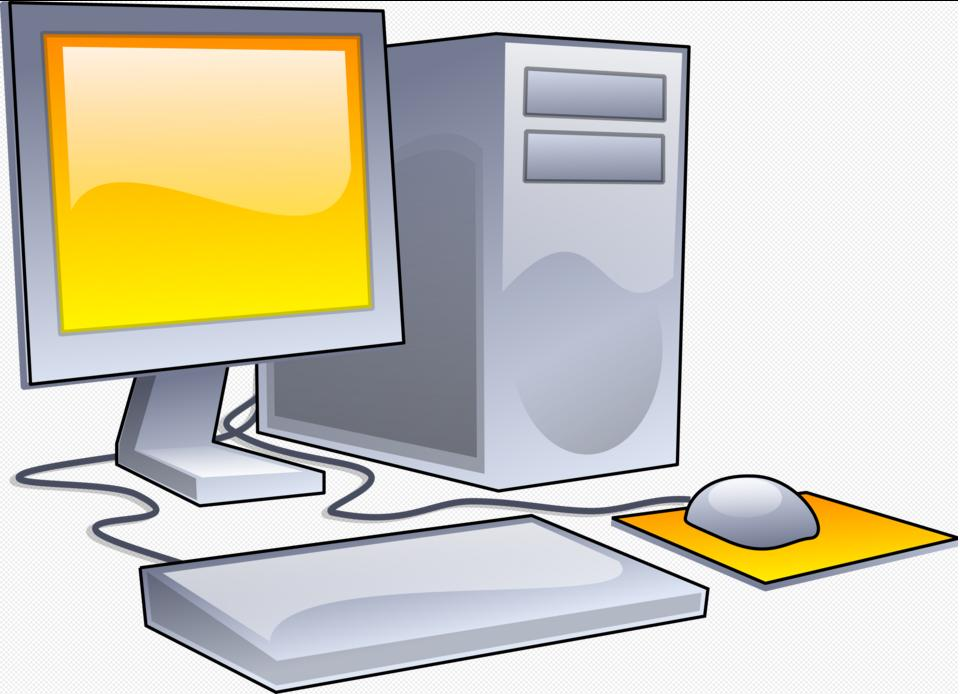

SMU Computer Science Educational Objectives
SMU Computer Science Program Educational Objectives
Within five years of graduating, students should:
- Be working as a computing professional, utilizing the knowledge acquired in the BS program, or be enrolled in a graduate program.
- Be engaged in the computing profession and be utilizing professional skills to make a positive impact on society.
- Have participated in further professional development, employing the learning skills taught in their program.
- Be engaged in service to their profession and communities, consistent with the Benedictine tradition to serve.
The computer science program is embedded in the university's strong liberal arts curriculum. It thereby helps ready its students to pursue a broad range of careers, whether immediately upon graduation or after going on to seek an advanced degree. The program continues to evolve in response to advances in computer science and information technology and the needs of business and industry, in order to prepare its graduates for a lifetime of professional advancement, personal satisfaction, and service to society.
Student Outcomes
- An ability to analyze a complext computing problem and to apply principles of computing and other relevant disciplines to identify solutions
- An ability to design, implement, and evaluate a computing-based solution to meet a given set of computing requirements in the context of the program’s discipline
- An ability to communicate effectively in a variety of professional contexts
- An ability to recognize professional responsibilities and make informed judgments in computing practice based on legal and ethical principles
- An ability to function effectively as a member or leader of a team engaged in activities appropriate to the program's discipline
- An ability to apply computer science theory and software development fundamentals to produce computing-based solutions
Please visit SMU catalog for more information or email  to the Registrar Office